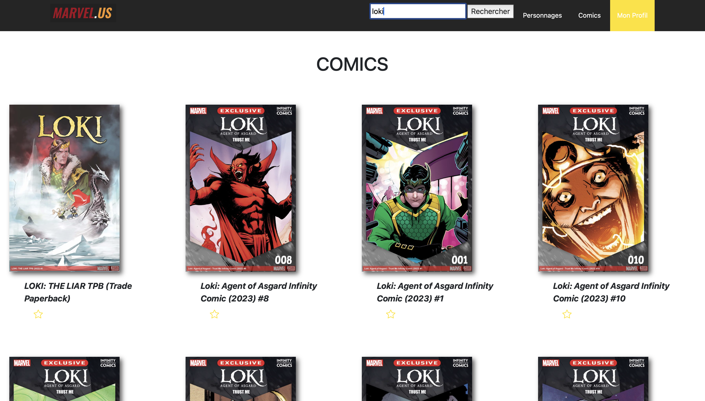
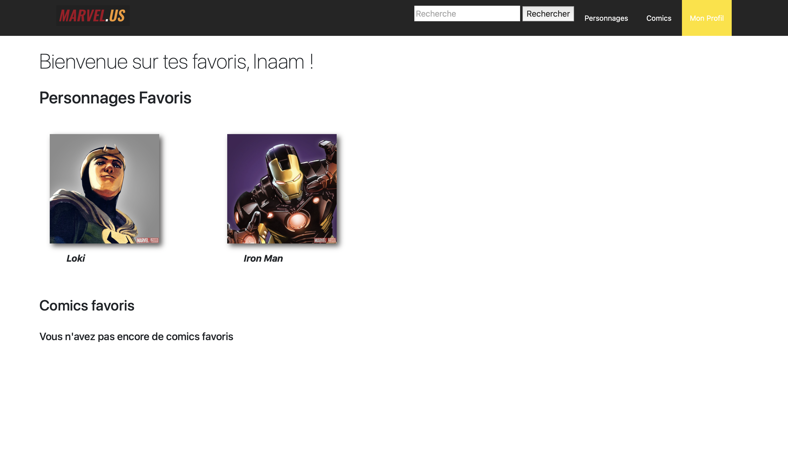
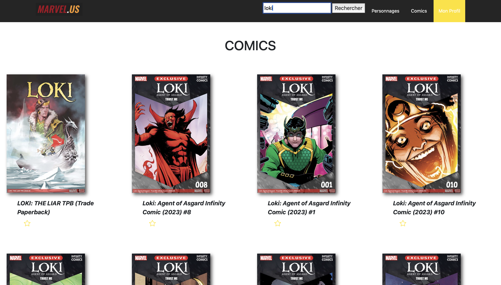
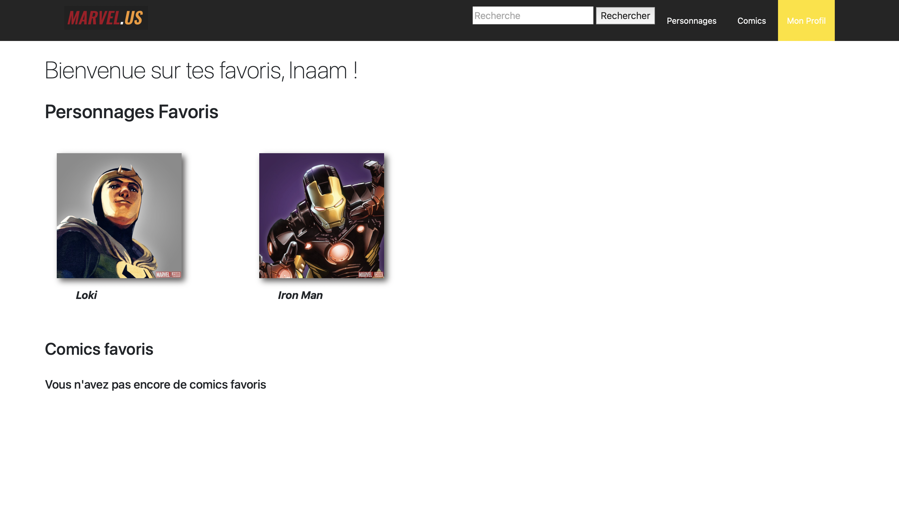

Réalisation : Marvel.us
Objectifs 🎯:
Consigne : Le but est de réaliser une application web adaptée à un usage sur écran étroit (smartphone). La navigation doit se faire à l'aide de plusieurs pages. Le choix des langages et des frameworks ou bibliothèques est entièrement libre, tant que cela reste bien sûr du domaine du web.
Compétence mise en oeuvre : Travailler en mode projet.
Description 📖:
Le nom réel du projet : MARVEL.US
Les participantes du groupe :
- Inaam VERTENEUILLE
- Elia WU
- Maïlys POULAIN
* La page d'accueil affiche les derniers comics sortis et les personnages rattachées à ces comics
* Sur la page d'accueil du site web, on propose la création d'un compte utilisateur.
* Un utilisateur connecté peut utiliser un formulaire de recherche pour chercher des personnages de
comics Marvel à partir de l'API Marvel
* Le formulaire de recherche devra afficher les résultats venant de l'API Marvel, avec la possibilité de
trier et filtrer les résultats selon des critères cohérents (nom, comic de provenance, etc...)
* Chaque personnage des résultats de la recherche doit pouvoir être mis en favoris, ce qui aura pour
effet d'insérer toutes les données du personnage choisi en base de données, personnages qui seront visible sur une page personnelle.
Lien vers l'API Marvel utilisée : https://developer.marvel.com/account
Outils 🛠️:
 Vscode
Vscode Django
Django
Documents 📄:
Avis 🙋🏽♀️:
Avis: le rendu final du site n'est pas si mal mais ce que je ferais différement serais de tenir les dates qu'on s'était fixer en commençant par les nécessités principales.
Résultat 🔥:
 


